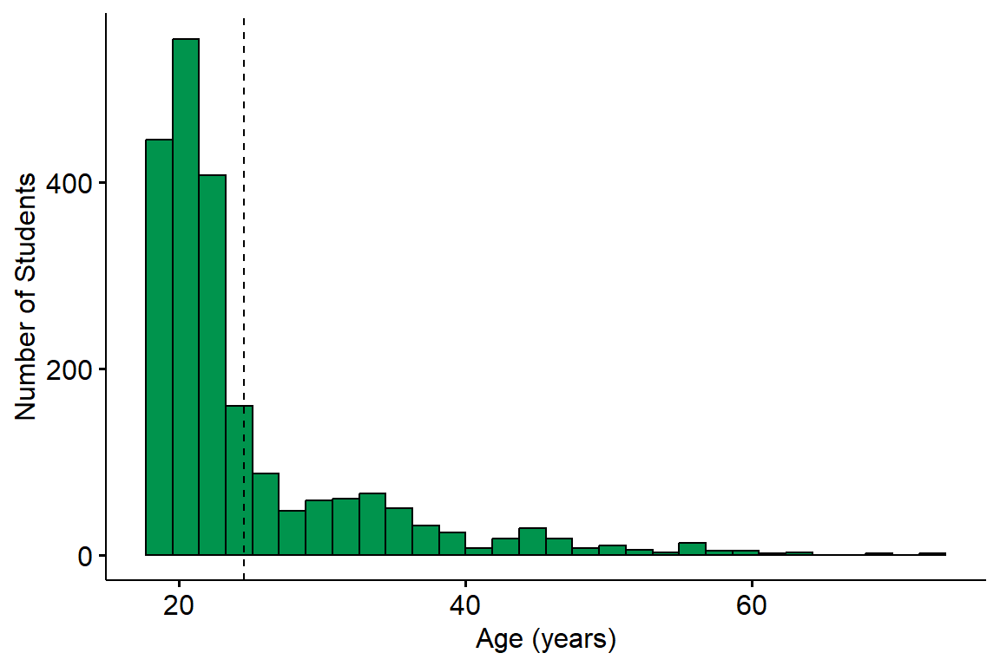
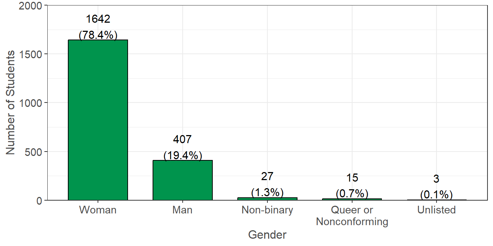
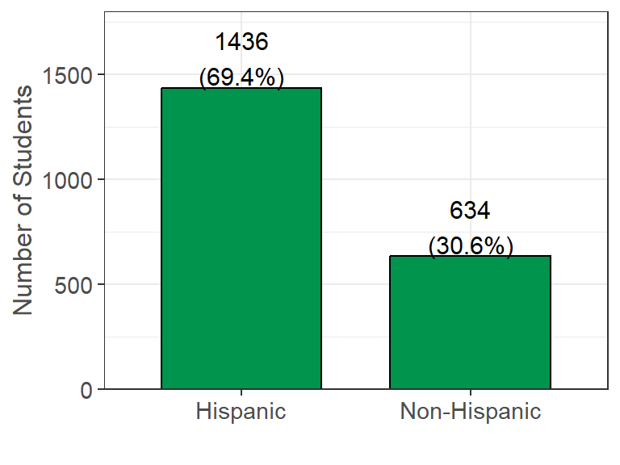
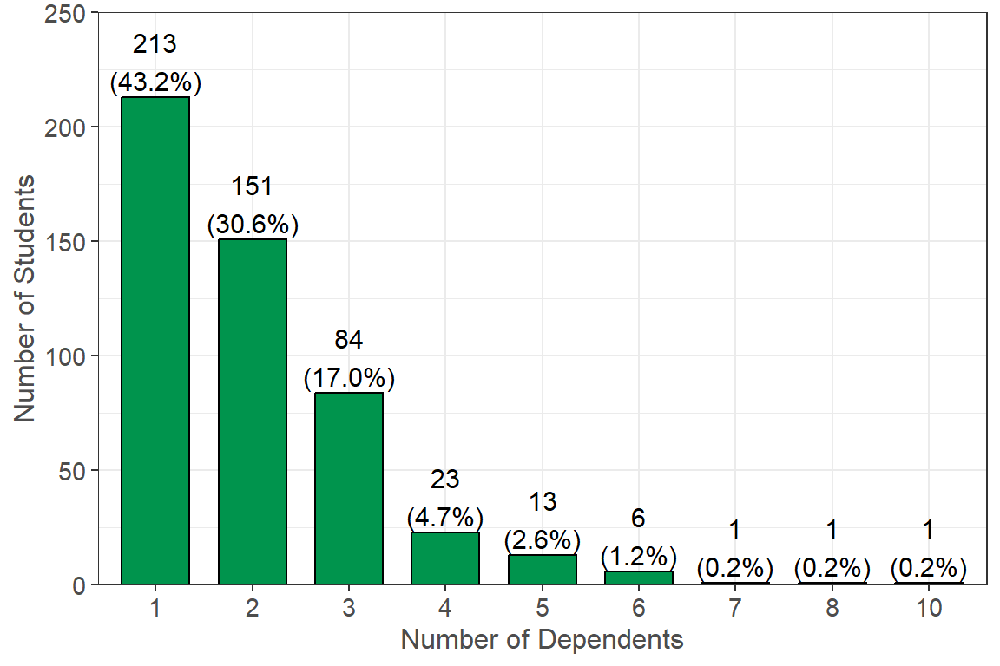
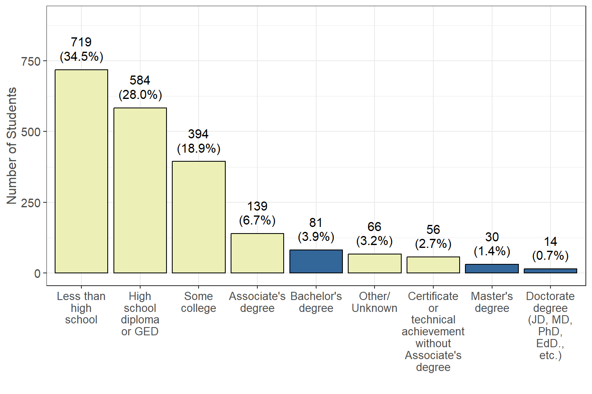
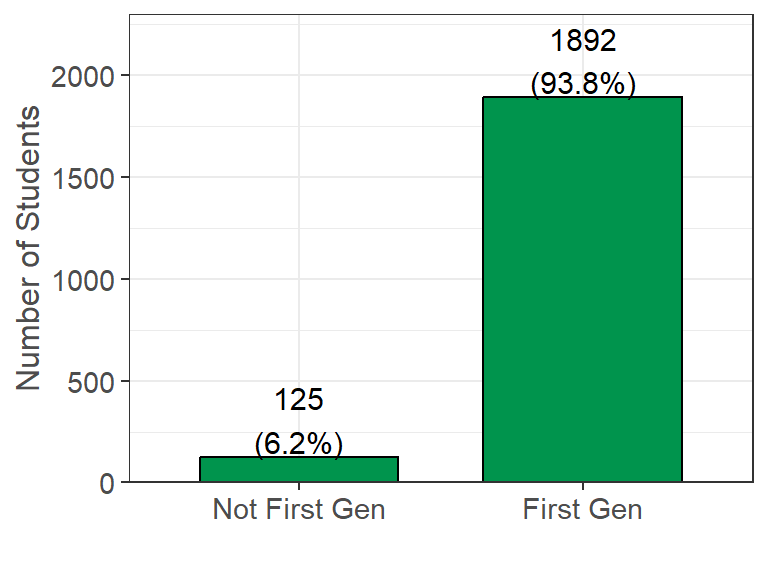
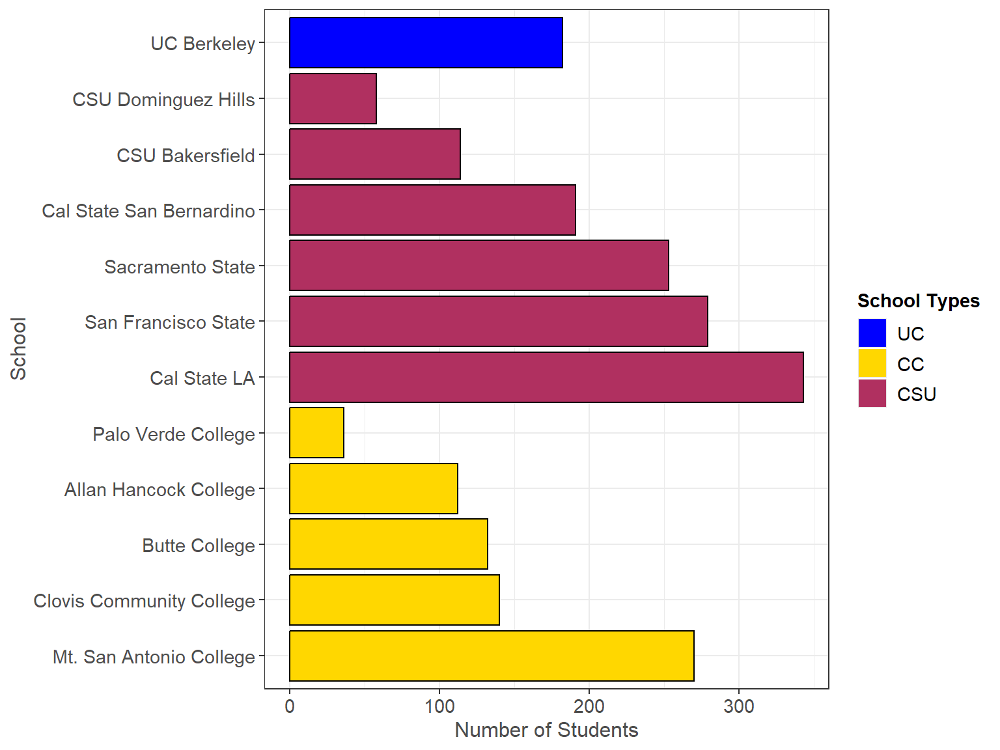
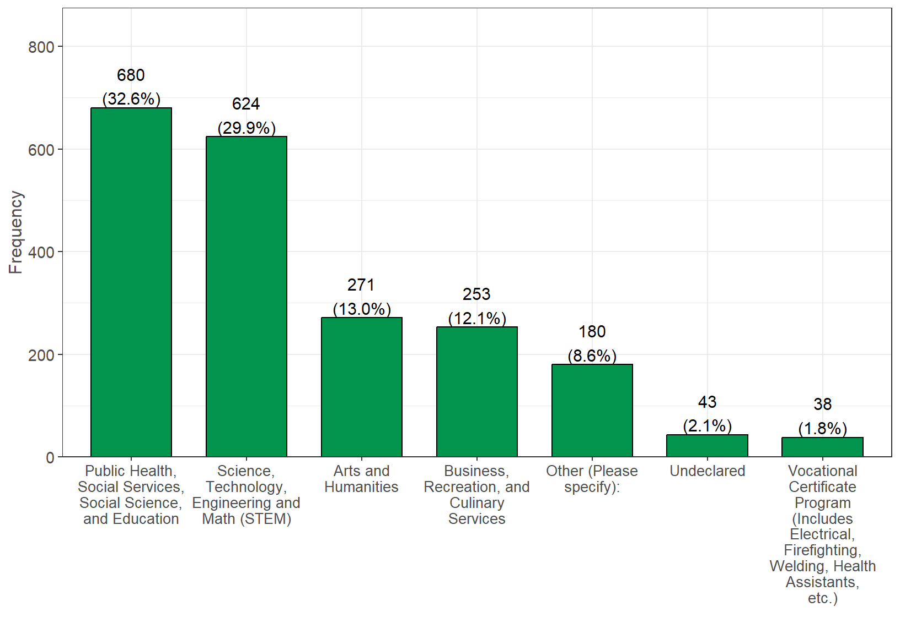
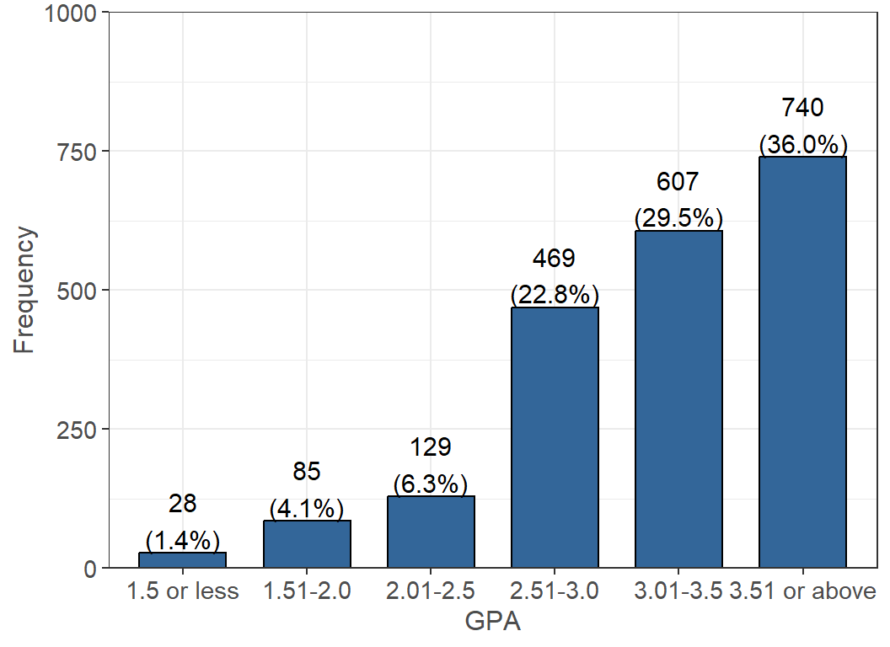
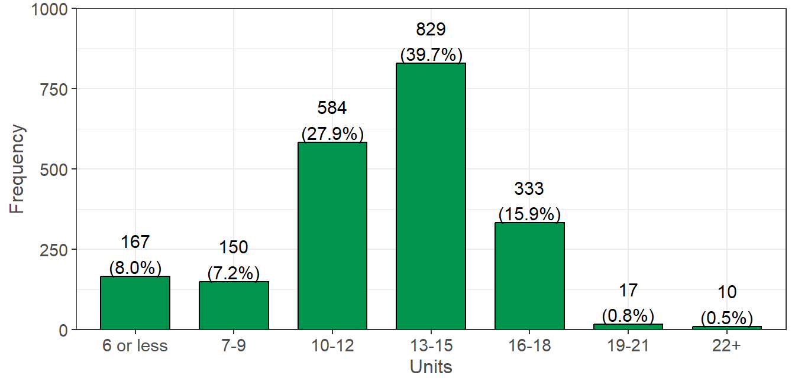

Demographics
Personal Demographics
Students’ personal demographics (e.g. age, ethnicity, number of dependents, etc.) were obtained and visualized in this section. Specific survey questions and summaries are found below each figure.
Age
Survey question: What is your date of birth?
Summary: Student age was determined by the difference between birth date and the time in which the survey was completed. Students’ (n=2110, 100% of 2110 reporting) average age is 24.6 years with a range of 18 to 72 and the majority falling between 20-30 years old.
Gender Identity

Survey question: What is your gender identity?
Summary: 1642 (78.4%) of the students identify as a woman, 407 (19.4%) identify as a man, and 42 (2.0%) identify as gender non-binary and queer/non-conforming, respectively. Remaining students who preferred not to answer.
Ethnicity (i.e. Identifying with Hispanic Origin)

Survey Question: Do you identify as Hispanic or Latino or Spanish Origin?
Possible answers were those pulled from the U.S. Census questionnaire and Hispanic Origin included: Mexican, Mexican American, Chicano, Puerto Rican, or another Hispanic/Latino/Spanish origin.
Summary: 1436 (69.4%) of the students self-identify as having Hispanic Origins and 634 (30.6%) of the students self-identify as Non-Hispanic.
Race
| Identified Race | Yes (%) |
|---|---|
| White | 859 (38.2%) |
| Prefer not to answer race | 755 (33.6%) |
| Asian | 321 (14.3%) |
| Black or African American | 167 (7.4%) |
| American Indian and Alaska Native | 106 (4.7%) |
| Native Hawaiian and Other Pacific Islander | 40 (1.8%) |
Survey Question: What race do you identify as? (Select all that apply)
Possible answers were those pulled from the U.S. Census questionnaire and included: White, Black or African American, American Indian or Alaska Native, Chinese, Filipino, Asian Indian, Vietnamese, Korean, Japanese, Other Asian, Native Hawaiian, Samoan, Chamorro, Other Pacific Islander. Although “Prefer not to answer” was an option, “Do not know” was not an option. These 14 options were collapsed into the 5 broad U.S. Census groups due to sample size variations.
Summary: 859 (40.7%) of the students self-identify as White, 321 (15.2%) as Asian, 167 (7.9%) as Black or African American, 106 (5.0%) as American Indian and Alaskan Native and 40 (1.9%) as Native Hawaiian or Other Pacific Islander. 755 (35.8%) %) prefer not to answer race identity.
Dependents

Survey Question: If you have dependents, then how many of them receive more than 50% of their financial support from you?
Summary: 493 of the students reporting have dependents who receive more than 50% of their financial support. Of those with dependents, 213 (43.2%) have one dependent, 151 (30.6%) have two and the 128 (26.0%) students have more than 3 dependents.
Parents Education

Survey Question: What is the highest level of education completed by your parents/guardians (for example, if your mother and father both raised you, and your mother has the highest level of education, then indicate her highest level of education)?
Summary: 1892 (93.8%) of all students report first generation status based on their parent/guardian education level. This outcome is not surprising because the students were either enrolled in EOP or EOPS and both programs recruit students with first generation status. 1697 (81.5%) of students reported that their parents/guardians had less than an Associate’s degree, and 584 (28.0%) of those students reported their parents/guardians did not have a high school diploma or GED.
First Generation

Calculated from previous Survey Question: What is the highest level of education completed by your parents/guardians (for example, if your mother and father both raised you, and your mother has the highest level of education, then indicate her highest level of education)?
Summary: 1892 (93.8%) of all students report First Generation status. As stated above, this outcome is not surprising because the students were either enrolled in EOP or EOPS and both programs recruit students with first generation status.
Academic Characteristics
The following set of questions were asked in regards to the students’ academic status. This includes information such as what college they are currently enrolled in, their class standing, major, GPA, and enrolled units. They were also asked questions about programs they participate in as well as what type of student they are (transfer, international, etc.) to help identify variables that may influence or correlate with other responses.
School

Survey Question: N/A
Summary: 1238 (58.7%), 690 (32.7%) and 182 (8.6%) of college students who completed the survey (n=2110) are enrolled in CSU, CCC and UC, respectively. All college students were either in the Educational Opportunity Program (EOP) at the UC or CSU systems or in the Extended Opportunity Programs and Services (EOPS). As of Fall 2020, there were 31,553 students in the CSU EOP.
Class Standing
Estimate your class standing by units completed (do not include units from this semester/quarter): (n=2065, 98% of 2110 reporting)

The statewide survey captures students of all class standing. Of the 2065 students, there were 565 freshmen, 433 sophomores, 579 juniors, and 444 seniors.
Major
Which of the following categories best describes your major? (n=2089, 99% of 2110 reporting)

NOTE: Science, Technology, Engineering and Math (STEM) was shortened for the figure above, but also includes the following majors: Medicine, Computer Science, Agriculture, Accounting, Statistics, Nursing, and Nutrition.
The majority of students in the data are majoring in a Public Health, Social Services, Social Science, and Education program (680 students). 624 of the students are Science, Technology, Engineering and Math (STEM) majors.
Overall GPA
What is your approximate overall grade point average (GPA)? Remember that your GPA is on a scale from 0 to 4.0 (n=2063, 98% of 2110 reporting)

The average overall GPA for students is 3.31, while the median is 3.4. The majority (65.5%) of students have a GPA greater than 3.0.
Currently Enrolled Units
How many units are you currently taking? (n=2090, 99% of 2110 reporting)

The average number of units a student is enrolled in is 12.86 units, while the median is 13 units. The majority of students are considered full-time (12 or more units), with 12 units being the highest occurring and 15 units being the second highest occurring.
Student Identifiers
The following tables contain separate questions that were asked as a series of Yes/No responses to help further understand students. They were grouped together in this page by the start of the question.
I identify as…
| Yes (%) | |
|---|---|
| A Transfer Student. (n = 2008) | 742 (37.0%) |
| An ESL (English as a Second Language) student. (n = 2020) | 581 (28.8%) |
| LGBTQA+. (n = 1997) | 295 (14.8%) |
| A student with a disability. (n = 2013) | 248 (12.3%) |
| A DREAM (i.e. undocumented) student. (n = 2081) | 148 (7.1%) |
| A former foster youth/child. (n = 2084) | 127 (6.1%) |
| A non-California resident (not International). (n = 2059) | 76 (3.7%) |
| A DACA (i.e. Deferred Action for Childhood Arrivals) student. (n = 2073) | 65 (3.1%) |
| A student athlete. (n = 2073) | 50 (2.4%) |
| An International student. (n = 2079) | 22 (1.1%) |
| A Veteran of military service. (n = 2100) | 14 (0.7%) |
Disability Support Services
Note: This name varies by campus and may not always be called the Disability Support Service Center.
| Yes (%) | |
|---|---|
| I identify as a student with a disability (n = 2013) | 248 (12.3%) |
| I receive services through my campus for a disability (n = 2065) | 195 (9.4%) |